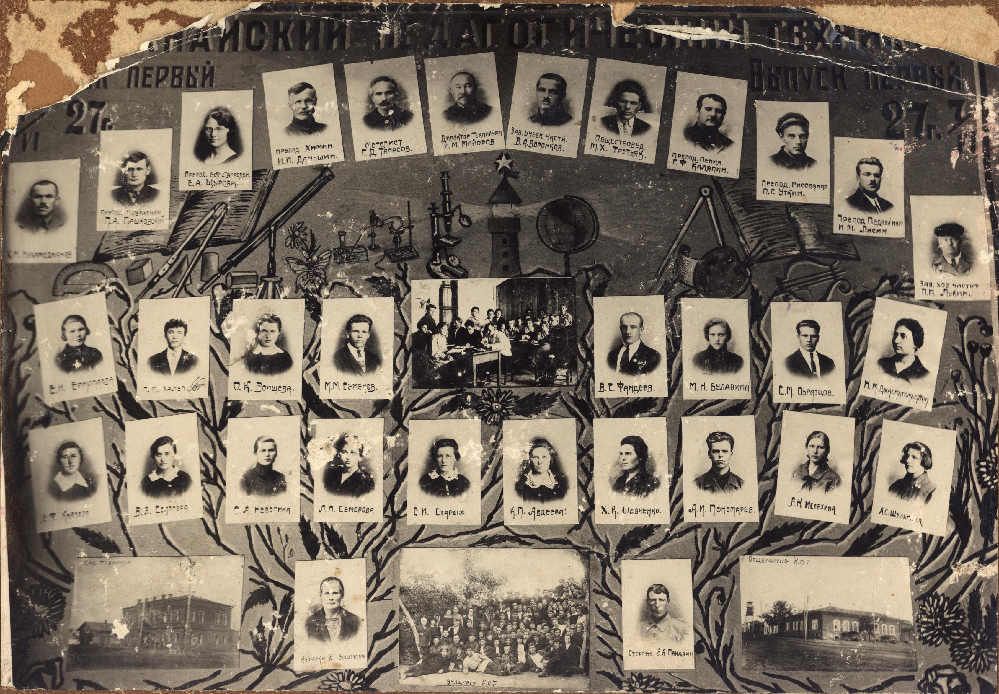
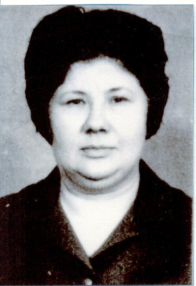
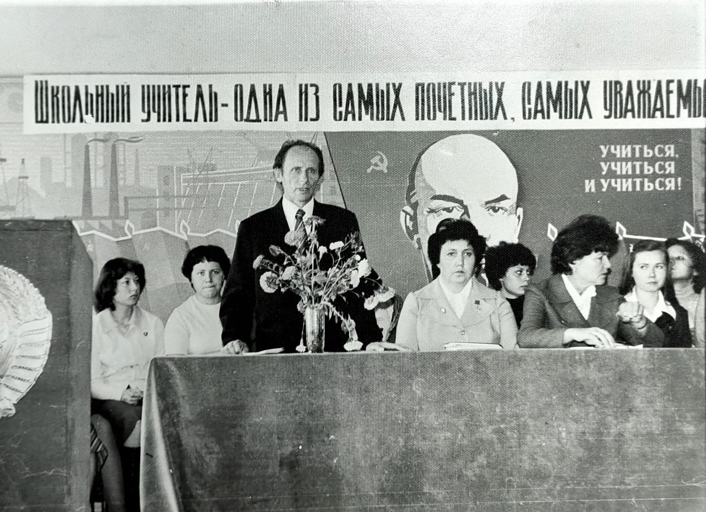
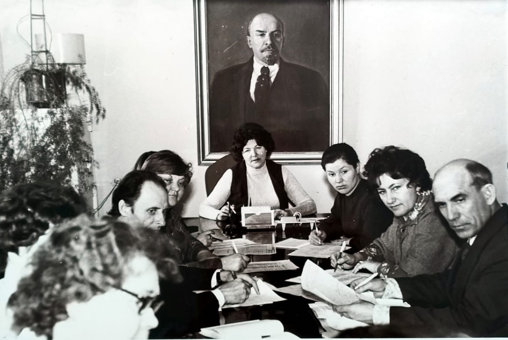
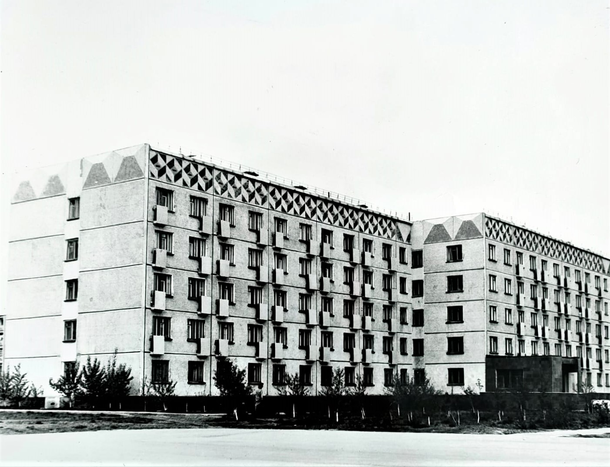
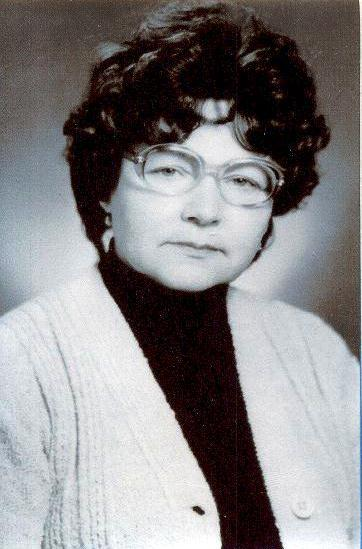
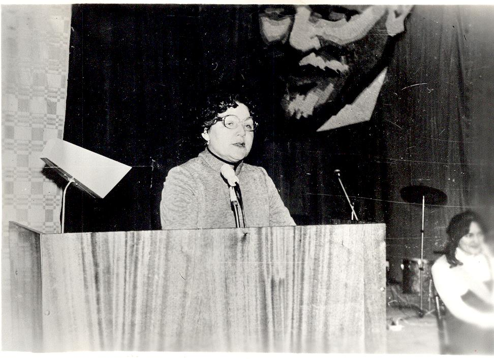
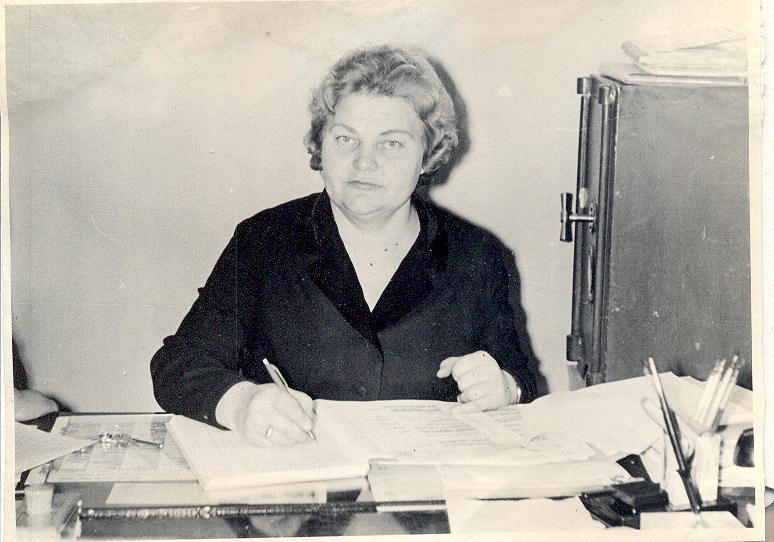

ҚПКК тарихының хронологиясы
1925

1925 жылы Қостанай орыс педагогикалық техникумы құрылды.
1927

1936
1936 жылы қазақ мектептерінде орыс тілі пәні мұғалемдерін дайындау бойынша бөлім ашылды.
1940
1940 жылы Қостанай орыс педагогикалық техникумының директоры болып И.В. Лосевская тағайындалды.
1943
1943 жылы Қостанай педагогикалық училищесі Меңдіқара ауданының Боровое аулына ауыстырылды.
1944
1944 жылы жылы Қостанай қ., Қалинин к-сі, 30 (қазіргі Алтынсарин к-сі) мекенжайы бойынша Қостанай қаласында Облыстық халаққа білім беру бөлімі жанымдағы 'сырттай учлище' ұйымдастырылды. Директоры - Борис Дмитриевич Мелехин.
1951
1951 жылы 'сырттай оқу училищесінің' директоры болып Нина Михайловна Березан тағайындалды.
1954
1954 жылғы шілдеде педагогикалық училищенің Меңдікара бөлімшесі жабылды, студенттер Қостанай сырттай педагогикалық училищесіне ауыстырылды.
1963

Қостанай қаласында педагогикалық училищені ұйымдастыру туралы Қазақ КСР Министрлер Кеңесінің 1963 жылғы қаулысы.

Алғашқы директор Серова Римма Павловна – Орал университетінің түлегі, тарих маманы. Педагогикалық училище Пушкин көшесі 33 мекенжайында орналасқан. 1972 жылы училище Пушкин көшесі 140 мекенжайындағы ғимаратқа көшті. Римма Павловна педагогикалық училищенің қалыптасуы мен дамуының бастауын жасаған кәсіби педагогтар ұжымын қалыптастырды.



1967
Алғашқы бастауыш сынып мұғалімдері оқуын аяқтады.
1970
Мектепке дейінгі бөлім ашылды.
1971
Қоғамдық мамандықтар халық университетінің паспорты алынды.
1976

1976 жылы бұрынғы партия қызметкері Ольга Михайловна Онищенко педагогикалық училищенің директоры болып тағайындалды. Оның басшылығымен оқу орны дамудың жаңа кезеңіне өтті.

1981 жылы Быковский көшесі, 9 мекенжайында 1200 орындық, 40 кабинеті мен зертханалары бар жаңа оқу корпусы және 400 орындық жатақхана пайдалануға берілді.
Замандастарының естеліктері бойынша, Ольга Михайловна бастапқыда қатал басшы ретінде көрінгенімен, уақыт өте келе ұжымды терең түсініп, адамгершілік қасиеттерімен ерекшеленді.

Ол жеке өмірінде ауыр қайғыға қарамастан, үлкен қайсарлық танытып, кәсіби қызметін жалғастырды. Әріптестері оны ақылды, білімді және принципшіл басшы ретінде жоғары бағалады.
Оның ең үлкен жетістіктерінің бірі — 1981 жылы жаңа оқу жылын қазіргі колледж ғимаратында бастау болды.
1978
Сырттай бөлім ашылды.
1981
Валентина Петровна Сальник колледж директоры болып тағайындалды.
Колледж жаңа оқу корпусына көшті.
1989
Қазақ тілінде оқытатын мектепке дейінгі тәрбие мамандарын даярлау басталды.
1990
Римма Шыңғысқызы Бектұрғанова директор болып сайланды.
1991
«Пединститут-педучилище» оқу-ғылыми-әдістемелік кешені ұйымдастырылды.
Балабақшалардың қазақ топтары үшін алғашқы тәрбиешілер даярланып шықты.
1992
Педагогикалық училище колледж болып қайта құрылды.
Колледж жанында педагогикалық лицей ашылып, 2010 жылға дейін жұмыс істеді.
1994
Колледжге Қазақстан Республикасының Тұңғыш Президенті Нұрсұлтан Назарбаев келді.
1996
«Үйде білім беру» мамандығы ашылды.
1997
Бастауыш білім беру үшін шет тілі мұғалімдерін даярлау басталды.
1998
«Дизайн» мамандығы ашылды.
1999
Қостанай мәдениет колледжі педагогикалық колледждің бөлімшесіне айналды.
2000
Мемлекеттік емес тілде оқытатын мектептерге арналған қазақ тілі мен әдебиеті мамандығы ашылды.
2001
Қазақ мектебіндегі ағылшын тілі мамандығы ашылды.
2002
Информатика және есептеу техникасы мамандығы ашылды.
2003
Қазақ мектебіндегі неміс тілі мамандығы ашылды.
2007
Александр Иванович Калугиннің вокал студиясы құрылды.
2009
«Кітапхана ісі», «Өзін-өзі тану», «Музыка мұғалімі» мамандықтары ашылды.
2010
«Баланс» педагогикалық отряды жұмыс істейді.
Колледж директоры болып Ғалия Өлмесханқызы Оразамбетова тағайындалды.
2012
Колледж атауы коммуналдық мемлекеттік қазыналық кәсіпорын болып өзгертілді.
2013
Колледждің 50 жылдық мерейтойы атап өтілді.
2014
Колледж ғылыми-әдістемелік жұмысты ұйымдастыру бойынша облыстың үздік оқу орны атанды.
2015
Григорий Семенович Олейник атындағы кабинет ашылды.
2016
WorldSkills чемпионатында алтын медаль жеңіп алды.
2017
QPK LIFE студенттік телевидениесі іске қосылды.
2018
Колледждің Қамқоршылық кеңесі құрылды.
2019
Дуалды оқыту жүйесі енгізілді, WorldSkills чемпионатында студенттер жүлделі орындарға ие болды.
2020
Колледж Қостанай облысындағы үздік білім беру ұйымы атанды.
2021
Жаңа мамандық ашылып, республикалық жетістіктерге қол жеткізілді.
2022
Студенттік өзін-өзі басқару дамып, клубтар мен шығармашылық үйірмелер белсенді жұмыс істейді. WorldSkills чемпионатында студенттер жоғары нәтижелер көрсетті.
2023
Колледждің жаңа жетістіктері мен жобалары.